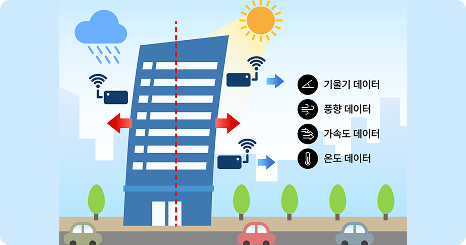
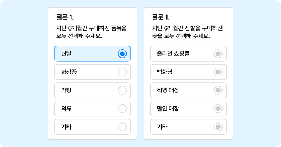

개념 학습
데이터 수집 방법
직접 수집
직접 수집은 특정 목적을 위해 데이터를 처음부터 모으는 방법이다. 이 방법은 우리 주변에 다양한 형태의 방대한 데이터가 존재하지만 정작 조사자에게 필요한 데이터가 없을 때, 조사자에게 필요한 데이터를 여러 센서나 플랫폼을 활용하여 정확하게 얻을 수 있다는 장점이 있다.
직접 데이터를 수집하는 방법의 예
카메라로 촬영하여 데이터를 수집
디지털 장치인 카메라나 마이크 등을 이용하여 사진과 동영상, 소리 데이터 등을 수집한다.
센서를 이용하여 측정

사물 인터넷 장치의 센서를 이용하여 온도와 습도,빛의 세기 등 다양한 데이터를 생성하여 수집한다.
설문 조사로 데이터를 수집

분석에 활용할 목적으로 설문하는 대상에게 질문한 후 답변을 받아 데이터를 생성하여 수집한다.